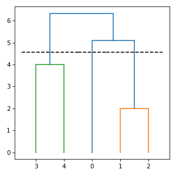
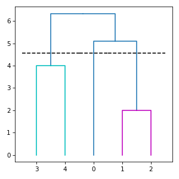
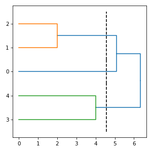

subrela.plot.matplotlib.draw_dendrogram function¶
-
subrela.plot.matplotlib.draw_dendrogram(ax, leaf_data, tree_data, cut_data, palette=None, orientation='vertical', tree_kws=None, cut_kws=None)[source]¶ Draw a dendrogram.
- Parameters
ax (matplotlib.axes.Axes) – Subplot on which a dendrogram is drawn.
leaf_data (pandas.DataFrame) – Data of leaves returned by
subrela.plot.get_dendrogram_datafunction.tree_data (pandas.DataFrame) – Data of tree lines returned by
subrela.plot.get_dendrogram_datafunction.cut_data (pandas.DataFrame) – Data of cut lines returned by
subrela.plot.get_dendrogram_datafunction.palette (list or None, optional) – Color palette for groups. If
None, taken frommatplotlib.rcParams['axes.prop_cycle'].orientation ({'vertical', 'horizontal'}, optional) – Orientation of a tree. If
'vertical', the height direction of a tree corresponds to the y axis. If'horizontal', it corresponds to the x axis.tree_kws (dict or None, optional) – Keyword argumsnts passed to
matplotlib.axes.Axes.plotmethod for drawing tree lines.cut_kws (dict or None, optional) – Keyword arguments passed to
matplotlib.axes.Axes.plotmethod for drawing cut lines.
- Returns
tree_lines (list[matplotlib.lines.Line2D]) – Tree lines.
cut_lines (list[matplotlib.lines.Line2D]) – Cut lines.
Notes
A default color of a tree is
tree_kws['color']. If it does not exist,palette[0]is used and group colors are selected frompalette[1:].If neither key
'color'nor key'c'is incut_kws,'k'is set to'color'. If neither key'linestyle'nor key'ls'is incut_kws,'--'is set to'linestyle'.Examples
import numpy import matplotlib.pyplot from subrela.clustering import get_clusters from subrela.plot import get_dendrogram_data from subrela.plot.matplotlib import draw_dendrogram X = numpy.array([[0, -5, -5, 6, 6], [0, -1, 1, -2, 2]]) Z = get_clusters(X) leaf_data, _, tree_data, cut_data = get_dendrogram_data( Z, groups=[0, 5, 6]) _, ax = matplotlib.pyplot.subplots(figsize=(4, 4)) draw_dendrogram(ax, leaf_data, tree_data, cut_data) matplotlib.pyplot.show()
Change colors:
import numpy import matplotlib.pyplot from subrela.clustering import get_clusters from subrela.plot import get_dendrogram_data from subrela.plot.matplotlib import draw_dendrogram X = numpy.array([[0, -5, -5, 6, 6], [0, -1, 1, -2, 2]]) Z = get_clusters(X) leaf_data, _, tree_data, cut_data = get_dendrogram_data( Z, groups=[0, 5, 6]) _, ax = matplotlib.pyplot.subplots(figsize=(4, 4)) draw_dendrogram(ax, leaf_data, tree_data, cut_data, palette=['m', 'c']) matplotlib.pyplot.show()
Draw horizontally:
import numpy import matplotlib.pyplot from subrela.clustering import get_clusters from subrela.plot import get_dendrogram_data from subrela.plot.matplotlib import draw_dendrogram X = numpy.array([[0, -5, -5, 6, 6], [0, -1, 1, -2, 2]]) Z = get_clusters(X) leaf_data, _, tree_data, cut_data = get_dendrogram_data( Z, groups=[0, 5, 6]) _, ax = matplotlib.pyplot.subplots(figsize=(4, 4)) draw_dendrogram(ax, leaf_data, tree_data, cut_data, orientation='horizontal') matplotlib.pyplot.show()